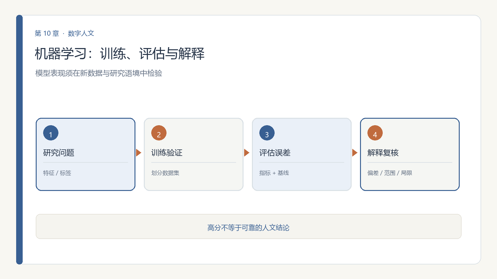
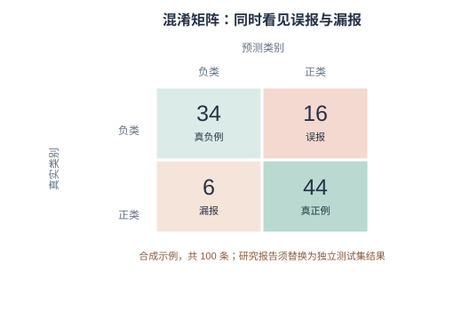

第 10 章 机器学习与深度学习基础
学习目标：完成本章后，你应能
（1）区分监督学习与无监督学习；
（2）解释训练/验证/测试与过拟合；
（3）用混淆矩阵等指标（而非仅准确率）评估一个模型；
（4）指出训练数据偏见会怎样被模型继承与放大。
10.0 思政导入
思政融入（课程思政）：算法若有偏见，会悄然加剧现实中的不平等。作为人文研究者，你有责任让模型向善、向公——在训练与评估中主动纠偏，不让技术放大歧视。科技是手段，人的尊严与社会公平才是目的；这既是伦理，也是价值立场。
思政案例（课程思政示范案例 / AI 思政课 知识库）：可参照高职教师人工智能伦理研究（韩燕霞，基于 5 个国际文件）提出的“透明度、公平性、隐私保护”三维度——让模型向善、向公。

10.1 为什么人文也要懂一点模型
前面的章节帮助我们整理、解释数据；机器学习进一步从样本中学习规律，用于预测或归类，例如辅助比较书信作者、探索文本主题或给器物提供候选断代。经典案例是对《联邦党人文集》匿名篇章的作者归属分析：量化词汇使用与统计推断为争议作者问题提供了证据，但结论依赖文本版本、候选作者和特征选择。模型可以帮助检验假设，不会替代文献考证。
理解模型的目标不是把每个研究者训练成工程师，而是能够追问：训练数据代表谁？测试方式是否公平？错误会落在哪些材料上？模型结论能否由独立证据复核？
理论10.2 监督学习：特征、标签与训练
监督学习用"带答案的例题"训练：给模型一组"特征→标签"（如文本特征→文体类别），让它对未见样本预测。分类输出类别，回归输出数值；两者都需要有代表性的标注数据和清晰的标签定义。
人文材料中的标签往往来自后人编目或学者判断，不是天然正确的答案。训练、验证和测试数据应按研究问题切分：若要预测新作者，就不能让同一作者的作品同时泄漏进训练集和测试集；若要预测未来时间，也要按时间切分。否则模型可能记住版本、作者或编者线索，而非学习到声称的风格。
理论10.3 无监督学习：聚类与降维
无监督学习没有预设标签，研究者使用聚类寻找相似样本群，用降维把高维特征压缩到较易观察的空间。它适合探索"材料是否出现值得追问的结构"，例如先把不同地区的报刊文章聚类，再回到原文阅读代表样本。
聚类结果会受文本清洗、向量表示、距离函数、聚类数和随机初始化影响；二维投影可能扭曲点间距离，图上分开的簇未必代表真实流派。应比较多个参数和随机种子，报告稳定性，并用领域知识与原文抽样解释簇的含义，而不是直接给算法发现的组命名为历史派别。
理论10.4 评估：准确率之外
- 过拟合：模型把训练集"背下来"，换新数据就垮——所以必须分训练/验证/测试；
- 混淆矩阵：看"把 A 判成 B"错在哪，比单一准确率信息量大；
- 精确率与召回率：前者关注预测为正的样本中有多少正确，后者关注真实正例有多少找回；F1 是二者的调和平均；
- 基线：模型总要比"全判最多类"等简单方法更有用，且应与同一测试集上的基线比较。
例如，若某类文献只占测试集的 5%，模型把所有文献都判为"其他"仍有 95% 准确率，却一个目标文献也找不出来。选择指标应由错误成本决定，并同时报告各类样本数、混淆矩阵和宏平均指标。

10.5 可解释性：SHAP 与注意力
黑箱模型不能直接当人文结论。SHAP 等特征归因方法可估计某个特征对当前模型预测的贡献，但解释依赖背景样本、特征相关性和模型设定；它解释的是模型为何这样预测，不是历史现象为何发生。
注意力权重也不能简单当作模型"理解了什么"的证据。可解释性应与反事实测试、错误样本检查、不同子群体的评估和外部证据结合。Ries、van Dalen-Oskam 与 Offert（2023）关于数字人文可复现性与可解释性的讨论，强调把分析流程、数据处理与模型解释写进研究记录：研究文章。
理论10.6 伦理坐标：从历史数据学的"历史偏见"（本章核心能力）
- 训练数据偏见：模型学的是"过去的数据"，过去的歧视会被继承（如某类文献被系统性低估）；
- 代理歧视：用" proxies"（如地名替代族群）绕开敏感字段，反而隐蔽地偏见；
- 样本外失效：在一种年代、地区或文类上表现良好，不代表可迁移到另一组材料；
- 自证循环：用模型给史料打标签，再把标签当"事实"喂回训练，偏见固化。
2024 年关于 LLM 文化数据标注的方法研究提出结构化的标注流程，说明用模型扩大文化材料分析规模时，任务定义、抽样和人工校验仍不可省略：Dubourg et al., 2024。对人文项目而言，应报告训练材料的年代、地域、语种、文类、标签来源、测试切分和各子集错误；敏感材料还要评估公开模型与数据是否会造成额外伤害。
一条红线：不把模型输出当"客观真相"；报告必须交代训练数据来源、规模与已知偏差。
10.7 综合实践：聚类探索与文本分类解释
任务一：对文本做聚类并解释
小练习 10.1（机器学习）：取第4章得到的文档向量（或任意文本嵌入），用 K-Means 聚类成若干组，看每组是否对应某个隐含主题；再用可解释方法（或人工抽样）判断"模型凭什么这么聚"，并指出哪一组可能因数据偏见而失真。本章 V2.1 的 Applications of Machine Learning and Deep Learning in Genomics and Proteomics 虽在生命科学，其"评估与可解释"思路可迁移到人文。
任务二：用 SHAP 解释一个文本分类
- 目标：在任务一的探索基础上，改做有标签分类，并解释“模型靠什么判断”。
- 步骤：
- 取带标签文本（如两类主题）；
- 训练一个简单分类器；
- 用 SHAP 取 Top 特征词；
- 检查特征是否符合直觉；
- 写 150 字：可解释性为何关乎公平。
- 工具：sklearn + shap。
- 产出：SHAP 特征图 + 解读。
- 评价量规：分类正确（30%）、SHAP 正确（30%）、公平讨论（40%）。
10.8 讨论与小结：方法迭代、岗位变化与模型评估
方法迭代与科研岗位的重塑
学完机器学习，值得抬头看看这门技术正在怎样改变"做研究"这件事本身。
方法的迭代在加速。 以文本分析为例，主流方法栈十年内换了两代：词频统计 → TF-IDF 与主题模型（LDA）→ 预训练嵌入与 BERTopic → 大语言模型直接抽取与智能体流水线。这告诉你两件事：具体工具的"保质期"在缩短，今天热门的库三年后可能无人问津；但"提出好问题 + 判断数据是否可信"的能力在升值——它不随框架更替而失效。
岗位的冲击已经发生。 《自然》网站 2026 年 2 月刊载的一项研究调查了 40 余位学界与业界 AI 使用者，多数受访者坦言：AI 已显著降低对"编写代码、处理基础数据"人员的需求——这类工作以往多由研究生、博士后承担；计算机建模等初级岗位同样承压；连科学论文翻译这类周边工作也在萎缩（美国翻译协会科学与技术部门会员数在不到两年半内减少约 26%）。
更值得警惕的是"新岗位不再诞生"。 有计算生物学家感慨：若五年前组建实验室，聘请研究程序员是题中应有之义，如今 AI 足以胜任繁重的编码工作，此举或再无必要。这引出一条隐藏风险——人才梯队的断裂：这些初级岗位本是通往更高科学职位的阶梯，若新人失去"练级"机会，短期看是"以更低成本获得更多产出"，长期看却是后继无人。
招聘标准也在改。 有研究者表示，如今招博士后不再看重"是否会写基础代码"，而看重两件事：驾驭 AI 的工具能力，与面对技术变革的开放心态；她更倾向于寻找智能体的"训练家"。
对你的意义：需要动手操作的实验岗、统筹项目的资深科学家目前仍在"安全区"，但自动化实验系统正在追赶。真正稳固的位置，属于既懂一个领域、又能审计数据与驾驭模型的复合型人才——这正是这门课想把你送去的地方。
本章小结与思考
带走三件事：监督 vs 无监督（有无标签）、评估四件套（训练/验证/测试、混淆矩阵、基线、过拟合）、可解释 + 偏见自觉。模型是放大镜，不是判官。
思考题
- 如果你用机器学习给古诗"判作者"，训练数据偏向名家，结论会怎样偏？如何察觉？
- 为什么"准确率 95%"仍可能是一个糟糕的模型？举一个场景。
- 可解释性对人文研究为何特别重要？不可解释的模型能进入你的结题报告吗？
10.9 学术前沿与延伸阅读
下表为通过 OpenAlex（开放学术图谱，聚合期刊/会议/预印本）、DBLP（CS 会议期刊，含 SIGIR/UIST/DH/IJDAR/EPIA）、arXiv（预印本）、CrossRef（期刊 DOI 元数据）、CORE（开放获取库）检索到的真实文献，按来源/被引排序，供延伸阅读与实验报告引用。
| 来源 | 年份 | 标题（链接） | 作者 / 场所 |
|---|---|---|---|
| CrossRef | 2019 | Deep Learning | Machine Learning and its Applications（被引 25） |
| CrossRef | 2021 | Fundamental Models in Machine Learning and Deep Learning | Design of Intelligent Applications Using Machine Learning and Deep Learning Techniques（被引 8） |
| CrossRef | 2022 | Explaining Artificial Intelligence, Machine Learning, and Deep Learning Models | Risk Modeling（被引 1） |
| CrossRef | 2020 | Machine Learning Paradigms: Introduction to Deep Learning-Based Technological Applications | Learning and Analytics in Intelligent Systems（被引 1） |
| CrossRef | 2023 | Applications of Machine Learning and Deep Learning in Genomics and Proteomics | Applications of Machine Learning and Deep Learning on Biological Data |
| CrossRef | 2019 | 2019 International Conference on Deep Learning and Machine Learning in Emerging Applications (Deep-ML) | |
| CrossRef | 2023 | Other Models of Deep Learning and Applications of Deep Learning | Machine Learning |
| CrossRef | 2023 | Machine Learning Optimization Applications | Swarm Intelligence and Evolutionary Computation |
课堂复现（检索即方法）：下列代码直接调用 OpenAlex 免费 API 复现本章文献检索（无需密钥）。
import urllib.request, urllib.parse, json
q = 'data science digital humanities'
url = 'https://api.openalex.org/works?search=' + urllib.parse.quote(q) + '&per_page=10&sort=cited_by_count:desc'
oa = json.loads(urllib.request.urlopen(url, timeout=30).read())
for w in oa['results']:
print(w['publication_year'], w['title'], '->', (w.get('primary_location') or {}).get('source', {}).get('display_name'))误用警示：① arXiv 预印本未经同行评审，引用须标 preprint 并追正式版；② 被引数代表影响力非结论正确；③ 商业库（WoS/Scopus/Elsevier/JSTOR/CNKI）本环境无订阅，需机构账号获取后再并入。
与实验衔接：将任一方法对照本章实验改写数据集或提示词，即可形成有学术依据的结题报告。
本章配套游戏：模型审判